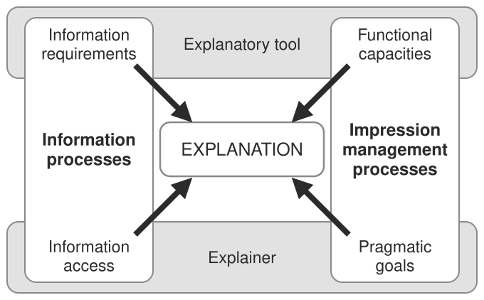

Psychology#
Some notes on papers / books surrounding psychology, especially evolutionary psychology and the psychology of explanation. These are notes on the authors' points and not an endorsement of their views.
About this chapter
The first part is the one closest to AI: research on how people generate and judge explanations. Miller’s paper on the psychology of explainable AI argues that explanations are contrastive, selected, about causes rather than probabilities, and social. Lombrozo’s papers show how explaining changes causal inference, generalization and learning.
The rest are notes on books, recording the authors’ claims rather than endorsing them: The Moral Animal on evolutionary psychology (kin selection, reciprocal altruism, status), The Righteous Mind on moral intuitions, A Brief History of Intelligence on five breakthroughs from steering to language, Homo Deus, and shorter notes on irrationality, therapy, attachment and polarization.
Chapter outline: 13 sections
- Explanations1 figure
- The invisible gorilla
- The moral animal1 interactiveWright applies evolutionary psychology to sex, family, friendship, status and morality.
- The Righteous Mind: Why Good People Are Divided by Politics and ReligionHaidt's two main claims: moral intuitions come first and reasoning mostly justifies them afterward (the elephant and its rider), and morality rests on more foundations than harm and fairness.
- A brief history of intelligence (max bennett)Bennett organizes the evolution of the brain into five breakthroughs: steering, reinforcement learning, simulating, mentalizing and language.
- Homo deusHarari argues that famine, plague and war have become manageable, so humanity's new goals will be immortality, happiness and divinity.
- Predictably IrrationalAriely's examples of systematic irrationality: prices anchor what people will pay, options are judged relative to nearby options, social norms clash with market norms, and owners overvalue what they own.
- Maybe you should talk to someone
- The gifted child (alice miller)
- Attached (amir levine & rachel heller)Attachment theory sorts people into three styles: secure, anxious and avoidant.
- Polarization (ezra klein)Klein's thesis is that American politics is identity politics.
- Freud
- Misc
Explanations#
Psychology of xai (miller, 2006)#
Miller’s four properties are the core of this section. The rest sketches the three processes behind an explanation: finding causes, selecting a few of them, and the explainee judging the result.
people employ certain biases (kahneman, 2011) and social expectations (hilton, 1990) when they generate and evaluate explanation
4 properties
Explanations are contrastive — they are sought in response to particular counter- factual cases – people do not ask why event P happened, but rather why event P happened instead of some event Q
Explanation are selected (in a biased manner) — people use cognitive biases to expect and give specific causes rather than all the possible real causes
Probabilities probably don’t matter — while truth and likelihood are important in explanation and probabilities really do matter, referring to probabilities or statistical relationships in explanation is not as effective as referring to causes
Explanations are social — they are a transfer of knowledge, presented as part of a conversation or interaction, and are thus presented relative to the explainer’s beliefs about the explainee’s beliefs.
philosophical foundations
“To explain an event is to provide some information about its causal history…”
2 types of causal definitions: dependence (e.g. probabilistic model) or transference (physical causation)
2 types of (perceived) causes: internal (due to an actor) vs external (due to situation / environment)
explanation is an answer to a why-question
abductive reasoning - deriving a hypothesis to explain observed phenomenon
“inference to the best explanation” (harman)
contrasts with inductive reasoning - accepting a hypothesis via scientific experiments
contrasts - lots of possible contrasts given a question, often communicated using tone
overton gives 5 categories and 4 relations that define building blocks for any scientific explanation
social attribution - big emphasis on intentionality
folk psychology does not describe how we think; it describes how we think we think
while people attribute less intentionality to aggregate groups than to individuals, they attribute more intention- ality to jointly acting groups than to individuals (o’laughlin & malle)
side-effect effect = knobe effect - asymmetry of responses of side effects in harm/help scenarios - moral character of consequences influences how non-moral aspects (e.g. intentionality) are judged
cause could be the same as “morally or institutionally responsible”
cognitive processes used in explanation

Fig. 89 Figure 1. What shapes an explanation of behaviour. The explanatory tool sets information requirements and functional capacities; the explainer brings information access and pragmatic goals. Information processes (left) and impression management processes (right) both feed the explanation.#
causal connection - process people use to identify the causes of events
explaining (which forces people to think more systematically about the abduction process) is good for fostering generalisations, but this comes at a cost of over-generalisation (williams et al.)
“Identifying something as an instance of a kind and explaining some of its properties in terms of its being the kind of thing it is are not two distinct activities, but a single cognitive activity.” (prasada)
people tend to focus more on abnormal causes and also differ based on their perspective (kahneman & tversky)
explanation selection - process people use to select a small subset of identified causes as the explanation
contrastive, abnormality, intentionality, functionality, necessity, sufficienty, robustness, responsibility, blame
explanation evaluation - processes an explainee uses to evaluate the quality of an explanation
probability, simplicity, generalizability, and coherence with prior beliefs.
explanation is social - often is conversational
Grice’s maxims of conversation: quality, quantity, relation, and manner
only say what you believe; only say as much as is necessary; only say what is relevant; and say it in a nice way

The structure and function of explanations (lombrozo 2006)#
Lombrozo’s review asks what explanations are for. They fit new information into prior beliefs in a way that supports generalization, and the notes follow three effects: on causal inference, on how properties are generalized, and on learning.
explanation structures
accommodate novel info in the context of prior beliefs
do so in a way that fosters generalization
background
explanations answer why questions
cognitive science has embraced explanation with regard to concepts and prior knowledge
explanations affect: (1) prob. assigned to causal claims, (2) how properties are generalized, (3) learning
predominant concepts
causation
pattern subsumption - this knowledge constrains what causes are probable/relevant
function of explanations: predict/control the future, constraint for generalization
causal inference - depends on prior beliefs + statistical evidence
explanations constrain causal inference based on prior beliefs
e.g. “if provided with evidence that cars of a particular color and size have better gas mileage, children and adults will disregard the confounding factor of color to conclude that car size causes the mileage difference”
people often offer explanations over evidence, especially when evidence is sparse
generating explanations for why a claim might be true provides a way to assess the probability of that claim in light of prior beliefs
“when generated from true beliefs, explanations provide an invaluable source of constraint; when generated from false beliefs, explanations can perpetuate inaccuracy.”
generalization of properties
basics of generalization
similarity: property is more likely to generalize to a new case if new case is similar
diversity: for generalizing to a broader category, property is more likely to generalize with more diverse evidence
explanations can override these basics
generalization of knowledge systems
self-explanation aids learning
“Explaining to oneself thus facilitates generalization to transfer problems by isolating
relevant senses of similarity, helping learners to overcome ‘the frailties of induction’”
differences between explanation and causal reasoning
“some beliefs are privileged at the expense of others” - relevance determines which causal factors matter
“prior knowledge might not be deployed through other means” - e.g. “explaining why a claim might be true or false changes the perceived probability of that claim”
“properties of explanations, such as their generality or simplicity, can influence probabilistic judgements”
Causal Explanation (lombrozo & vasilyeva 2017)#
Inference to the best explanation means believing the hypothesis that best explains the data. The point here is that “best” includes simplicity, scope and explanatory power, not only posterior probability.
explanations appeal to causes (although not all explanations are causal e.g. mathematics)
causal inference here not the same as the way it is used in statistics
causal inference w/ explanations
“inference to the best explanation” - believe hypothesis that best explains the data
this is not just bayesian inference (a common assumption)
rather, it includes explanatory considerations such as simplicity, scope, and explanatory power
these things may improve short-term accuracy and make things easier to communicate/remember/use
it is possible that these things could be captured by a hierarchical bayesian model with appropriate priors / likelihoods
simplicity (lombrozo 2007) - explanation simplicity trades off w/ statistical likeliness
(lombrozo 2012) adults more likely to choose likeliness and all more like to choose likeliness for tasks with less apparent causal explanations
(pacer & lombrozo, 2017) explanation includes node simplicity = number of causes (nodes in graphical model) + root simplicity = number of unexplained causes (roots in graphical model)
people seem to only be sensitive to node simplicity
explanatory scope - how many things does this explanation imply (even if the others aren’t tested)
e.g. does a diagnosis predict additional effects not yet tested? people prefer diagnoses with narrower scope (khemlani, sussman, and oppenheimer 2011)
explanatory power - people’s explanations better predict their estimates of posterior probability than do objective probabilites on their own (douven & schupbach, 2015a, 2015b)
other considerations, such as coherence, completeness, manifest scope
causal discovery w/ explanations
causal discovery = causal model learning
engaging in explanation influences causal model learning
being prompted to explain can promote understanding
makes them more likely to find underlying causal models
(walker et al. 2016) - children asked to explain more attune to both evidence and prior beliefs
also sometimes reinforces people’s prior beliefs (right or wrong)
explaining “involved the integration of new information into existing knowledge” (Chi, De Leeuw, Chiu, and LaVancher, 1994)
reasons why explanation alters causal learning
attention - explanation doesn’t just boost attention - leads to specific benefits / deficits
motivation - explaining plays a motivational role (e.g. gopnik 2000 “Explanation as orgasm”)
i.e. people seeking good explanations motivates causal understanding
explanation favors finding hypotheses with “lovely” causes
however, some studies find that children prompted to explain outperform controls even when they don’t generate the right explanation
causal responsibility w/ explanations
causal responsibility = to which cause(s) do we attribute a given effect?
ex. “why did she slip?” - either “she is clumsy!” or “the staircase is slippery!”
classic ANOVA model (Kelley 1967) says ppl analyze covariation between factors such as person, stimulus, and situation but more seems to be involved
different questions have different “contrast class” (van Fraasesen, 1980, philosophy) - why did she slip? vs why did she slip on the stairs?
different questions shift things to causal relevance and not just probability
Explanation taxonomy#
Aristotle’s four causes are the classic way to sort explanations. The notes add which kinds people accept (final causes only when there is some causal link) and the two kinds of causal relationship, dependence and transference.
Aristotle’s 4 “causes” or modes of explanation
cause
description
example
efficient
proximal mechanisms of change
a carpenter is an efficient cause of a bookshelf
final (functional, teleological)
the end, function or goal
holding books is a final cause of a bookshelf
formal
the form or properties that make something what it is
having shelves is a formal cause of a bookshelf
material
the substance of which something is constituted
wood is a material cause of a bookshelf
final causes
e.g. camouflage causes zebra stripes
real cause is a preceding intution
experiments suggest final causes are only accepted well when there is some causal link
e.g. adults who believe in God are more likely to accept scientifically unwarranted teleological explanations
another taxonomy: inherent vs. extrinsic explanations (cimpian & salomon, 2014)
formal explanations
pretty limited to category membership
e.g. Zach diagnoses ail ments because he is a doctor
these can be seen as constitutive (not causal): e.g. has four legs bc dog, but not is red bc is barn (even though most barns are read)
“existence of a whole presupposes the existence of its parts, and thus the existence of a part is rendered intelligible by identifying the whole of which it is a part” (prasada & dillingham 2009)
people who gave different explanations (e.g. functional vs material) also generalized differently to different categories (lombrozo 09)
two types of relationships - when bouth are present people opt for dependence
dependence = counterfactually - if cause didn’t occur, effect wouldn’t have occurred
transference = physical connection, e.g. continuous mechanism / conserved physical quantity
Causal mechanisms#
A mechanism spells out the steps between a cause and its effect, or the arrangement of parts in a system such as a watch or a cell. Relations between levels of such a system are constitutive, not causal.
mechanism - spells out the intermediate steps between some cause and some effect
sometimes these are seen as explanations
alternative define mechanisms as complex systems that involve a (typically hierarchical) structure and arrangement of parts and processes, such as that exhibited by a watch, a cell, or a socioeconomic system
interlevel relationships are constitutive, not causal (e.g. saying molecules rub against one another - this is heat (contintutive) but people often misconstrue this is causal)
explanations can accomodate both types of relationships
Misc explanation work#
Evaluating computational models of explanation using human judgments (pacer, williams, chen, lombrozo, & griffiths, 2013) [PDF]
overton 2012 finds that explanations used something general (ex. model) to explain something specific (ex. data)
subsequent analysis overton 2012 finds “inference to the best explanation” - use specific instances (ex. data) to draw general inferences
waskan et al 2014 - must be actually intelligible
lombrozo 2011 - explanations are intrinsically valuable, but also play an important instrumental role in the discovery and confirmation of intuitive theories, which in turn support prediction and intervention
explanations should be understood in terms of their role in generating understanding (Achinstein 1983; Wilkenfeld 2014), supporting future judgments (Craik 1943; Heider 1958; Quine & Ullian 1970), or motivating the construction of causal theories (Gopnik 2000)
explanations play a role in generalizing from known to novel cases (Rehder 2006; Sloman 1994; Lombrozo & Gwynne 2014)
sometimes impedes learning about properties that are idiosyncratic
explanatory errors and “illusions” can help us identify when and why engaging in explanation is so often beneficial
functional approach: why do we want explanations?
the best explanation for persuasion or efficient storage of information, for example, may not be the one that best supports future prediction.
evidence (=the explanandum) provides for some hypothesis (=the explanans).
given causal thing what is best explanation
most relevant explanation model or explnatory tree model
human explanatory judgments track something more like evidence, information, or relevance, and not simply the prior or posterior probability of the explanans
desiderata
simplicity
if simplicity does inform explanatory preferences, it is trumped or made moot by probability
count simplicity vs root simplicity (root is often preferred)
fruitfulness
generally explanations with broader scope are better except for causal stuff
explanations + learning
explanation magnifies our prior beliefs
“negative program” - empirical results disprove philosophical intuitions
The invisible gorilla#
We think we experience much more of our physical world than we do
We generally only see what we’re looking for
Our memory is very fake
We have a belief in shortcuts to expand our brain’s abilities
ex. Lumosity
The moral animal#
Wright applies evolutionary psychology to sex, family, friendship, status and morality. The main tools are kin selection, altruism toward relatives in proportion to the relatedness \(r\), and reciprocal altruism (tit for tat).
Why We Are, the Way We Are: The New Science of Evolutionary Psychology - Robert Wright, 1965. Notes in this section are not an endorsement of the author’s views.
Sex, romance, and love#
Wright explains the difference in mating behavior between the sexes by the amount of male parental investment, and gives two reasons monogamy might arise: it can be imposed by ecology or by society.
darwin comes of age
Emile Durkheim - father of modern sociology
Wilson - initial book sociobiology was vehemently opposed
reactive against connotations of social darwinism
social darwinism is linked to eugenics
genes affect human nature in two ways
existence of guilt
developmental program to calibrate guilt
male and female
have to consider environment of evolutionary adaptation (EEA)
many studies on !Kung San of the Kalahari desert in Africa
throughout nature, females are more coy while males are more promiscuous
this is true of every known human society
Samoa example was thought to be different, but this study was refuted
true with turkeys (who can be seduced by a wooden female turkey head)
difference is due to amount of male parental investment
apes
ex. gorilla alpha male claims all the women
ex. gibbons are monogamous - live in family units separate from others
sing duets
gender differences in evolution
ideas that humans are a pair-bonding species
humans require high male parental investment (MPI)
vulnerable offspring
more education from two parents
genetically speaking, for males, worst thing is raising a child that isn’t theres
experiments suggest they are most angry at sexual infidelity
historically, sometimes killed children that weren’t theirs
quantity of sperm depends heavily on the amount of time a male’s mate has been out of his sight lately
genetically speaking, for females, worst thing is being abandoned
experiments suggest females are relatively more angry at emotional infidelity
however, can still be genetically useful for a female to be unfaithful
can extract gifts for sex - “resource extraction”
they don’t advertise their ovulation - “seeds of confusion”
madonna-whore dichotomy - a psychological phenomenon which groups females into 2 categories: marriage / fling
perhaps example of frequency-dependent selection
ex. blugill sunfish
normal males make nests and guard eggs
drifter males sneak around and fertilize others’ eggs
nature strikes a balance between both
in actuality, should be able to guage situation and switch between different behaviors
self-esteem might be biological marker that helps with this
males are more likely to gain from leaving a marriage
females only have ~25 fertile years
the marriage market
polygamy, initially, seems to benefit males
one male can get more females
why monogamy
ecologically imposed - if people are struggling to survive, a woman shouldn’t share a man with another
they won’t have enough resources
socially imposed - in economic unequal societies (like today)
these societies are the ones that have dowry
imagine 1000 men and 1000 women -> polygyny actually hurts the men
therefore, monogamy likely evolved to stop the dangers of men without wives
current divorce rates are high, hurting all alike
Charles Darwin focused on wealth, Emma focused on looks, they were married happily
Morals of the story#
Wright’s conclusions: what evolutionary psychology implies for ethics, blame and religion, and rules for applying it, chiefly that natural selection designed the mental organ, not the behavior.
darwinian (and freudian) cynicism
Freud
id - animal
ego - interprets id to superego
superego
evolutionary ethics
John Mill’s utilitarianism is a good starting point
morality best preserves non-zero sumness
blaming the victim
“genetic determinism” pops up in court cases (cases like insanity)
notion of free will is shrinking
less retributive of justice - more emphasis on deterrence, improving utilitarianism
rage of juries may wane as they come to believe that male philandering is “natural”
darwin gets religion
doctrines thus far likely have “harmony” with human nature
we are designed to believe that next rung on ladder will bring bliss, but in reality it will evaporate shortly after we get there
why religion
power to religion makers
mutual benefits for leaders and people
we came to empathize with all people
general tips
distinguish between behavior and mental organ governing it
remember that mental organ, not behavior, is what was actually designed by natural selection
these organs may no longer ba daptive
human mind is incredibly complex
The Righteous Mind: Why Good People Are Divided by Politics and Religion#
Haidt’s two main claims: moral intuitions come first and reasoning mostly justifies them afterward (the elephant and its rider), and morality rests on more foundations than harm and fairness.
jonathan haidt, 2012
questions
eating dead dog
ripping up american flag
sex with chicken
incest
parochial - having a limited or narrow outlook or scope; of or relating to a church parish
Intuitions come first, strategic reasoning second#
Haidt sides with Hume: reason is the servant of the passions. Fast intuitions (the elephant) make the judgment, and conscious reasoning (the rider) builds a justification afterward.
elephant and rider metaphor
where does morality come from
nativist - morality is innate
empiricist - morality is from childhood learning
rationalist - morality is self-constructed by children on the basis of their experience with harm
kids know harm is wrong because they hate to be harmed and learn its is wrong to harm others
came to reject this answer
new study
moral domain varies by culture
rich, westerners tend to differentiate between social constructions and moral harms while others don’t
westerners are individualistic - harm and fairness
other cultures are sociocentric
disgust and disrepect drive reasoning - moral reasoning is posthoc fabrication
in fact, morality is probably some combination of 1 & 2
intuitive dog and rational tail
Plato - reason (mind) is master of emotions
Hume - reason is the servant of passions
Jefferson - reason and sentiment are indpeendent co-rulers
Haidt believes in 2
Antonio Damasio writes Descartes’ error where patients are missing ventromedial prefrontal cortex (vmPFC)
they couldn’t have emotion
where difficult to reason without emotion - too many choices
intuitionism - calls reasoning rider and intution elephant
rider developed to help elephant
social intuitionism - other people can alter intuitions
elephants rule
brain can make snap judgements in 1/10 second
can predict 2/3 outcomes of senate / house elections based on attractiveness in this time
intuitions come first, strategic reasoning second
smells etc can influence our moral judgements
vote for me (and here’s why)
conscious reasoning immediately justifies intuitive response
self-esteem doesn’t make evolutionary sense, since being in groups was what mattered
rather, self-esteem measure’s one’s fitness as a mate / group member
experimental evidence for confirmation bias
moral/political matters - we are often groupish rather than selfish
There’s more to morality than harm and fairness#
Moralities built only on harm and fairness are typical of WEIRD (western, educated, industrialized, rich, democratic) people. Moral Foundations Theory lists six foundations, and in Haidt’s account liberals rely mostly on the first three.
be suspicious of moral monomists
beyond WEIRD mentality
WEIRD - western, educated, industrialized, rich, democratic - outliars, but often used
Schweder’s three ethics
autonomy - individual rights
community - group relationships
divinity - purity
there is more to morality than harm and fairness
taste buds of the righteous mind / ch 7 - the moral foundations of politics
deontology - rule-based ethics
moral psychology should be empirical - how the mind works, not how it ought to work
Moral Foundations Theory
care
evolved to care for young
fairness
punish cheaters
finding altruistic partner
liberty
loyalty
want people that are good team players
authority
allows us to thrive in hierarchical settings
sanctity
starts with omnivore’s dillema
survive pathogens
the conservative advantage
Durkheim - basic unit is family, not individual
liberals only really value first three moral foundations
Morality binds and blinds#
Why people are groupish. Haidt defends a form of group selection, proposes a hive switch that makes people lose themselves in a group, and treats religion as a team sport that suppresses free riders.
why are we so groupish
group selection is controversial
here are 3 exhibits defending it
major transitions produce superorganisms
shared intentionality generates moral matrices
chimpanzees have no shared intentionality
genes and cultures coevolve
evolution can be fast
the hive switch
two candidates for hive switch
oxytocin genes
mirror neurons
hive switch doesn’t seem to be for everyone, but rather just for one’s group
religion is a team sport
descriptive definitions - describe what people think are moral
normative definitions - describe what is truly right
utilitarianism
deontology
belief in supernatural - could be accidental as by-product of hypersensitive agency detection device
religion can effectively surpress free-rider problem
disagreeing more constructively
people are predisposed to ideologies
then there is serious confirmation bias
liberals and conservatives are both necessary to balance each other out
Manichaeism - polarization, believing one side only
imagine world with no countries, religion -> would probably be chaos
A brief history of intelligence (max bennett)#
Bennett organizes the evolution of the brain into five breakthroughs: steering, reinforcement learning, simulating, mentalizing and language. Several connect directly to AI, for example dopamine acting as a temporal-difference learning signal.
5 breakthroughs
steering
simulating
mentalizing (e.g. theory of mind)
language
LUCA: “last universal common ancestor” of all life
early cyanobacteria evolved photosynthesis
they started polluting the atmosphere with oxygen
respiring microbes emerged to convert sugar and oxygen back into carbon dioxidek resulting in the greatest symbiosis ever found (and lasts to this day)
photosynthetic: converting water/C02 -> sugar & oxygen
respiratory: converting sugar & oxygen -> C02
original prupose of neurons/muscles was likely simply swallowing
emotion
two axes, together called affect: valence (goodnes or badness of a stimulus) and arousal
dating back to nematode, neurotransmitters emerged to control these 2 axes
dopamine - released when food is detected around worm (local search, high arousal, positive valence)
serotonin - released when food is inside worm (rest and digest, low arousal, positive valence)
adrenaline - relocate (escape, high arousal, negative valence)
opioids - anti-stress, released after period of extreme activity
chronic stress (like depression) - released when giving up after acute stress (e.g. need to preserve energy) - also releases serotonin
temporal difference learning - when the presentation of an unexpected reward increases dopamine activity, the ommission of an expected reward decreases dopamine activity
repurposed from a fuzzy average of recently detected food to an ever fluctuating, precisely measured, and meticulously computed predicted-future-reward signal
the basal ganglia is a student, always trying to satisfy its vague but stern hypothalamic judge
the best way to get a rat to obsessively push a lever for food is not to have the lever release food pellets every time it is pressed; instead it is to have the lever randomly release food pellets
triassic mass extenction event - deadliest of all extinction events
1.5 BYA cyanobacteria suffocated earth with C02 and polluted it with O2
over a billion years later, triassic mass extinction event -> the explosion of plants on land seems to have committed a similar crime
core evolutionary function of the neocortex might have been the opposite–recognition might have been the means that unlocked the adaptive benefit of simulating
recording studies corroborate the idea that the aPFC creates a model of an animal’s goals
the aPFC doesn’t want to adjust its model of your intent to assume you are not thirsty, instead if wants to pause the basal ganglia’s mistake, and convince it to turn around and go toward the water
persistent tension between our moment-to-moment cravings (as controlled by the amygdala and basal ganglia) and what we wknow to be a better choice (as controlled by the aPFC)
this is why ppl become more impulsive when tired/stressed – the aPFC is energetically expensive to run, software i you are tired or stressed, the aPFC will be much less effective at inhibiting the amygdala
the aPFC learns to predict movements of navigational paths, whereas the motor cortex learns to predict movements of specific body parts
the motor cortex was originally not the locus of motor commands but of motor planning
the neocortex offers a slower but more flexible system for training, and the basal ganglia offers a faster but less flexible version for well-trained paths and movements
correlation: bigger primate neocortex and social group size
correlation between grooming time & group size (but not body size)
one thing that determines monkey’s palce in its group is the famility is born into
correlation between free time & time spent socializing
gPFC: granular prefreontal cortex is uniquely active during tasks that require self-reference
gPFC constructs explanations of the simulation itself (metacognition)
mirror neurons have been found in numerous behaviors across multiple areas of cortex
temporarily inhibiting a human’s premotor cortex impairs their ability to correctly infer the weight of a box when watching a video of someone picking it up
the ability to use tools is less about ingenuity & more about transmissibility
is imagining the mind of someone else really any different from imagining the mind of your future self?
people make similar types of mistakes in tasks of theory of mind & of anticipating future needs
the ecological-brain hypothesis argues that it was the frugivore diet of early primates that drove the rapid expansion of their brains
for fruits that are more popular, monkeys will go out of their way to plan where they sleep to be en route to these fruits
language
no other known form of naturally occuring animal communication assigns declarative labels (otherwise known as symbols)
in nonhuman primates, the meanings of these gestures and vocalizations is not assigned through declaratie labeling but emerge directly from genetic hardwiring
imperative (non-declarative) labels yield a reward
the second way in which human language differs from other animal communication is that it contains a grammar
it seems conversation is not a natural consequence of the ability to learn language; rather, the ability to learn language is, at least in part, a consequence of a simpler genetically hard-coded instinct to engage in conversation
what is unique in the human brain is not in the necortext; it is hidden & subtle, tucked in older structures like the amygdala & brain stem - an adjustment to hardwired instincts that make us take turns, makes children & parents stare back and forth, and makes us ask questions
misc
all languages use the same rising intonation when asking yes/no questions
only 2 mammals on earth produce females that are not reproductively capable until death: orcas & humans
all humans alive today have a common ancestor~100K years ago. Nearest living cousin is chimp, whose shared common ancestor was >7MYA
larynx & vocal cords of our ancestors weren’t adapted to vacal language until ~500K years ago
gossip enables a stable system of reciprocal altruism among a large group of individuals
Homo deus#
Harari argues that famine, plague and war have become manageable, so humanity’s new goals will be immortality, happiness and divinity. The three parts cover how humans came to dominate, how humanism gives the world meaning, and how humans could lose control to algorithms.
Old problems: famine, war, plague#
famine, war, plague are less common now – what will take their place?
if these + ecological equilibrium are solved, do we need more?
plague
black death in 1330s - killed between 75-200 mil
smallpox plague in 1500s along with other diseases from Europe tothe Americas
spanish flu 1918 infectedabout 500 mil (1/3 of world population)
50-100 mil died
covid19 (as of jan 2021)
~1/2 mil dead
since 1980s, >30 mil AIDS death
“in the arms race between doctors and germs, doctors run faster”
war kills many fewer people these days
mutually assured destruction
made things like information / knoweldge more important (e.g. can’t loot tech)
Anton Chekhov famously said that a gun appearing in the first act of a play will inevitably be fired in the third (“chekhov’s law”)
nowadays in real world, may note be the case
terrorism generally works more by evoking outrage
New goals: immortality, happiness and divinity#
immortality
ex. Ray Kurzweil at Google trying to “solve death”
in 20th century, life expectancy went from forty to seventy
no clear line separates healing from upgrading
happiness
epicurus - happiness is goal of life
bentham/mill - happiness is pleasure - pain
suicide rates are ~25x higher in developed nations
2 levels
psychological level: happiness depends on expectations rather than objective conditions
biological level: both our expectations and our happiness are determined by our biochemistry
new drugs are constantly being developed and societal standards around them shift
divinity
biological engineering - rewriting genetic code
cyborg engineering - adding thinkgs like bionic hands, artificial eyes
engineering of non-organic beings - AIs
many of the the powers classical gods had are now possible through engineering
Knowledge that does not change behaviour is useless. But knowledge that changes behaviour quickly loses its relevance
the study of history aims above all to make us aware of possibilities we don’t normally consider. Historians study the past not in order to repeat it, but in order to be liberated from it.
ex. capitalism, feminism, civil rights
ex. lawns
ppl thought living without pharoahs was inconceivable
PART I – Homo sapiens Conquers the World#
emotions are algorithms imbued by genes
religions sprung up w agriculture justifying animal cruelty
the founding idea of humanist religions such as liberalism, communism and Nazism is that Homo sapiens has some unique and sacred essence that is the source of all meaning and authority in the universe
no clear distinction between human and animals
evolution implies there is no eternal soul
literal meaning of the word ‘individual’ is ‘something that cannot be divided’
what happens in the mind that doesn’t happen in the brain?
possible that the sensations of consciousness / emotion are an unnecessary byproduct
clever hans (math horse)
Homo sapiens is the only species on earth capable of co-operating flexibly in large numbers
individuals favor fairness (ex. ultimatum game) but societies tolerate inequality
things can have subjective, objective, or intersubjective meaning (e.g. we agree money has value so it does)
PART II Homo Sapiens Gives Meaning to the World#
Religion is anything that confers superhuman legitimacy on human social structures. It legitimises human norms and values by arguing that they reflect superhuman laws
in theory, both science and religion are interested above all in the truth, and are destined to clash
in reality, neither cares much about the truth and thus they can coexist
religion is interested above all in order. It aims to create and maintain the social structure. Science is interested above all in in power.
engineers could still build a hi-tech Noah’s Ark for the upper caste, while leaving billions of others to drown
we have no scientific definition or measurement of happiness
not only do we possess far more power than ever before, but against all expectations, God’s death did not lead to social collapse
central religious revolution of modernity was not losing faith in God; rather, it was gaining faith in humanity
at least in the West, God has become an abstract idea that some accept and others reject, but it makes little difference either way
modern people have differing ideas about extramarital affairs, but no matter what their position is, they tend to justify it in the name of human feelings rather than in the name of holy scriptures and divine commandments
my current political views, my likes and dislikes, and my hobbies and ambitions do not relfect my authentic self. Rather, they reflect my upbringing and social surrounding
liberal humanism, socalist humanism, evolutionary humanism
“under liberalism, everyone is free to starve”
papal infallibility (in which Pope can never err in matters of faith) became Catholic dogma only in 1870
before marx, people defined and divided themselves according to their views about God, not production methods
PART III Homo Sapiens Loses Control#
If algorithms know our preferences better than we do, choices such as elections lose their authority. Dataism values every phenomenon by its contribution to data processing.
can people choose their desires in the first place?
ask yourself why do you think a particular though
do we value experiences or memories: ex. pick between dream vacation w/ no memories or decent vacation
liberal habitats such as democratic elections will become obsolete, bc Google can represent even my own political opinions better than myself
once AI agents evolve from oracles to agents, they can speak directly with each other (e.g. to schedule meetings etc.)
defenders of human individuality stand guard against the tyranny of the collective without realising it is now threatened from the opposite direction - losing meaning in a deluge of biological/electronic personalization
dataism says that the universe consists of data flows, and the value of any phenomenon or entity is determined by its contribution to data processing
dataism worships data
“what will happen to scoeity, politics and daily life when non-conscious but highly intelligent algorithms know us better than we know ourselves?”
Predictably Irrational#
Ariely’s examples of systematic irrationality: prices anchor what people will pay, options are judged relative to nearby options, social norms clash with market norms, and owners overvalue what they own.
by Dan Ariely, 2008
arbitrary coherence - market prices themselves that influence consumers’ willingness to pay. What this means is that demand is not, in fact, a completely separate force from supply.
Choices are always relatives
Adding a comparable worse option makes the comparable option seem better
Supply and demand doesn’t always work
The price for black pearls was completely made up
People often stay anchored to the prices they first see
Social norms compete with market norms
Fining parents who pick up their children late
High price of ownership
Students who won tickets in a lottery would sell them for much more than buy them
Pepsi wins blind taste tests, coke wins shown ones
Maybe you should talk to someone#
by Lori Gottlieb, 2019
happiness is statistically abnormal
“There’s something likable in everyone”
surfing the internet etc. are just ways to distract ourselves
presenting problem - the issue that sends a person into therapy
“avoidant”
Will you spot the insecurities that I’m so skillful at hiding?
high-functioning = verbal, motivated, open, and responsible
“the therapeutic act, not the therapeutic word.”
In idiot compassion, you avoid rocking the boat to spare people’s feelings, even though the boat needs rocking and your compassion ends up being more harmful than your honesty
creativity - the ability to grasp the essence of one thing and the essence of some very different thing and smash them together to create some entirely new thing
Your feelings don’t have to mesh with what you think they should be
There is a continuing decision to be made as to whether to evade pain, or to tolerate it and therefore modify it
-
Cluster A (odd, bizarre, eccentric):
Paranoid PD, Schizoid PD, Schizotypal PD
Cluster B (dramatic, erratic):
Antisocial PD, Borderline PD, Histrionic PD, Narcissistic PD
Cluster C (anxious, fearful):
Avoidant PD, Dependent PD, Obsessive-Compulsive PD
When I see couples in therapy, often one or the other will complain, not “You don’t love me” but “You don’t understand me.”
there’s a difference between a criticism and a complaint: the former contains judgment while the latter contains a request
Follow your envy—it shows you what you want.
most of us aren’t aware of how we actually spend our time or what we really do all day until we break it down hour by hour and say it out loud
In projection, a patient attributes his beliefs to another person; in projective identification, he sends them into another person
Did the patient feel understood?
conversion disorder = a person’s anxiety is “converted” into neurologic conditions such as paralysis, balance issues, incontinence, blindness, deafness, tremors, or seizures
alexithymia = doesn’t know what their feeling or don’t have the words to express it
Sometimes people can’t identify their feelings because they were talked out of them as children
Almost every woman I see apologizes for her feelings, especially her tears. I remember apologizing in Wendell’s office too. Perhaps men apologize preemptively, by holding their tears back.
“Modern man thinks he loses something—time—when he does not do things quickly; yet he does not know what to do with the time he gains except kill it.”
“Avoidance is a simple way of coping by not having to cope.”
Reacting vs. responding = reflexive vs. chosen
what would we therapists do without the word wonder to broach a sensitive topic?
Are you sorry for what you’ve done or are you simply trying to placate the other person who believes you should be sorry for the thing you feel completely justified in having done?
Her inner critic serves her: I don’t have to take any action because I’m worthless
You can’t get through your pain by diminishing it
privacy (spaces in people’s psyches that everyone needs in healthy relationships) and secrecy (which stems from shame and tends to be corrosive)
In the best goodbyes, there’s always the feeling that there’s something more to say
The gifted child (alice miller)#
“A child cannot run away from her as her own mother once did. A child can be so brought up that it becomes what she wants it to be.”
“a child can never see through unconscious manipulation. It is like the air he breathes; he knows no other, and it appears to him to be the only normal possiblity”
cathexis - the concentration of mental energy on onen particular person, idea, or object (esp. to an unhealthy degree)
grandiosity - the person who is “grandiose” is admired everywhere and needs this admiration; indeed, he cannot live without it.
“And is he noto bound to carry pent-up rage within himself, against those who have made him afraid to walk without stilts?”
introjection - the unconscious adoption of the ideas or attitudes of others
sisyphean - (of a task) such that it can never be completed.
depression ~ a possible reaction to psychic pain caused by the discrepancy between the actual and the ideal self representation
transference - the redicirection to a substitute, usually a therapist, of emotions that were originally felt in childhood
countertransference - the emotional reaction of the analyst to the subject’s contribution
Attached (amir levine & rachel heller)#
Attachment theory sorts people into three styles: secure, anxious and avoidant. The notes give an evolutionary story for each and studies on how closeness to a partner affects fear and stress.
3 main attachment styles
secure - comfortable with intimacy
anxious - crave intimacy, preoccupied / worried
avoidant - equate initimacy with loss in independence, minimize closeness
standard preach: “your happiness is something that should come from within and should not be dependent on your lover or mate. Your well-being is not their responsibility and theirs is not yours.”
science
in prehistoric times, closeness with a partner had evolutionary benefits (secure)
in dangerous environment, less attached an quickly moving on is useful (avoidant)
in separate harsh environment, being intensely persistent and hypervigilant also makes sense (anxious)
studies
connection between infant and caretaker was as essential for child’s survival as food/water
fmri study - fmri hypothalamus fear response was much lower when partner was holding hand
strange situation test - babies happily explore new room with mother there, otherwise get upset and scared
being around good/partner in marriage can lower/raise blood pressure(baker)
people with anxious attachment style noticed emotion changes in synthetic faces faster
most people are only as needy as their unmet needs
Polarization (ezra klein)#
Klein’s thesis is that American politics is identity politics. Parties and the public polarize each other in a feedback loop, partisanship becomes a mega-identity, and the media rewards it. The notes end with his three proposed fixes.
Central thesis is that all politics is identity politics (i.e. based on group membership) rather than based on ideology. The separation of parties and people’s groups (+media consumption) are a positive-feedback cycle which reinforces further polarization.
Most people who voted chose the same party in 2016 that they’d chosen in 2012. white voters without college educations swung sharply toward Trump, and their overrepresentation in electorally key states won him the election. - true even after pandemic
Everything had happened, and politically nothing had mattered. Opinions about Trump had barely budged.
“When someone shows you who they are, believe them.”
core argument of this book is that everyone engaged in American politics is engaged in identity politics.
As political institutions and actors become more polarized, they further polarize the public. This sets off a feedback cycle: to appeal to a yet more polarized public, institutions must polarize further; when faced with yet more polarized institutions, the public polarizes further, and so on.
We don’t just use politics for our own ends. Politics uses us for its own ends.
Systems thinking, “is about understanding how accidents can happen when no parts are broken, or no parts are seen as broken.”
history
But then race became an area of disagreement. Democrats didn’t just want to redistribute from rich northern whites to poor southern whites. They also wanted to redistribute from richer whites to poorer blacks. Furthermore, beginning in 1948, with President Harry Truman’s military desegregation orders, the Democratic Party became a vehicle for civil rights, betraying its fundamental compact with the South.
the American political system was most calm and least polarized when America itself seemed to be on the verge of cracking apart.
Polarization is not extremism, but it is sorting
When polarization is driven by allegiance to political parties, it can be moderating.
“negative partisanship”: partisan behavior driven not by positive feelings toward the party you support but negative feelings toward the party you oppose.
psychology
Evolutionarily, the power is in the mix of outlooks, not in one outlook—that’s why this psychological diversity has survived.
people preferred to give their group less so long as it meant the gap between what they got and what the out-group got was bigger.
To Hate Like This Is to Be Happy Forever.
“The living and dying through one’s allegiance to either Duke or Carolina is no less real for being enacted through play and fandom,”
“anywhere in the world where people describe being lonely, they will also—throughout their sleep—experience more of something called ‘micro-awakenings.’
Partisanship can now be thought of as a mega-identity, with all the psychological and behavioral magnifications that implies.
people with a lot of crosscutting identities tended to be more tolerant of outsiders than people with highly aligned identities.
One reason policy is not the driver of political disagreement is most people don’t have very strong views about policy.
when awarding a college scholarship—a task that should be completely nonpolitical—Republicans and Democrats cared more about the political party of the student than the student’s GPA. belief that many of our most bitter political battles, and most of our worst political thinking, are mere misunderstandings. The cause of these misunderstandings? Too little information—be
Being better at math didn’t just fail to help partisans converge on the right answer. It actually drove them further apart.
“the cost to her of making a mistake on the science is zero,” but “the cost of being out of synch with her peers potentially catastrophic,” making it “individually rational” to put group dynamics first when thinking about issues like climate change.
demographics
A useful rule of thumb is that political power runs a decade behind demographics, with older, whiter, more Christian voters turning out at higher rates.
But cultural power runs a decade or more ahead of demography,
“In the past five years, white liberals have moved so far to the left on questions of race and racism that they are now, on these issues, to the left of even the typical black voter,” writes Interlude
media
almost no one is forced to follow politics.
Netflix’s CEO Reed Hastings famously said his biggest competitor is sleep.
For much of American history, most newspapers were explicitly partisan, often including “Democrat” or “Republican” in the name
transition to a news industry that prized independence from party and ideology was driven by technological advances that changed the business model of newspapers.
The explosion of choice and competition carried by digital news upended this calculation again. To be interested in politics is to choose a side.
Ahler and Sood observe that the intensity of partisan feeling is increasing as the parties become more demographically different from each other, but the level of animosity seems to far outpace the level of difference.
The more interested in politics people were, the more political media they consumed, the more mistaken they were about the other party (the
“What if instead of telling people the things they need to know, we tell them what they want to know?” (Anchorman 2)
politically, it’s much easier to organize people against something than it is to unite them in an affirmative vision.
identity, once adopted, is harder to change than an opinion. An identity that binds you into a community you care about is costly and painful to abandon,
“The defining characteristic of our moment is that parties are weak while partisanship is strong,” share of Americans who can name their governor has been declining, even as the share that can name the vice president has held steady.
as we give more to national candidates and less to local candidates, that creates incentives for candidates to nationalize themselves, focusing on the polarizing issues that energize donors in every zip code rather than the local issues that specifically matter in their states and districts. parties, and particularly the Republican Party, are losing control of whom they nominate. But once a party nominates someone—once it nominates anyone—that person is guaranteed the support of both the party’s elites and its voters.
“vast majority of the stable democracies” in the world were parliamentary regimes, where whoever wins legislative power also wins executive power.
But a system like this can also encourage crisis—crises where, in other countries, “the armed forces were often tempted to intervene as a mediating power.”10 This is why there are no long-standing presidential democracies save for the United States.
The system works not through formal mechanisms that ensure the settlement of intractable disputes but through informal norms of compromise,
We became disgusted with the ways that local politics played out nationally.
This asymmetry between the parties, which journalists and scholars often brush aside or whitewash in a quest for “balance,” constitutes a huge obstacle to effective governance.
party differences
Democrats have an immune system of diversity and democracy.
as of January 2019, conservatives still lead, 35–26. Three-quarters of Republicans identify as conservative, while only half of Democrats call themselves liberals—and for Democrats, that’s a historic high point.
Democrats have lost two of the last five presidential elections due to the electoral college—the only times that’s happened in American history
By a margin of 57–37, Republicans wanted their party to become more conservative; by a margin of 54–41, Democrats wanted their party to become more moderate
solutions: bombproofing, democratizing, and balancing.
bombproofing: where congressional inaction can do great damage, we should ask ourselves whether the upside of congressional deliberation truly outweighs the risk of unnecessary disaster.
A quick survey of Europe, where multiparty democracy is common and plenty of countries are undergoing their own political crises, is enough to curb expectations.
balancing: rather than balacing things between states, balance between parties
Supreme Court so it has fifteen justices: each party gets to appoint five, and then the ten partisan justices must unanimously appoint the remaining five.
democratizing
we give too much attention to national politics, which we can do very little to change, and too little attention to state and local politics,
For all our problems, we have been a worse and uglier country at almost every other point in our history.
The Varieties of Democracy Project, which has been surveying experts on the state of global democracies since 1900, gave the US political system a 48 on a 1 to 100 scale in 1945 and a 59 in 1965. It was only after the civil rights movement that America began scoring in the ’70s and ’80s, marking it as a largely successful democracy.
Freud#
Id – set of instinctual trends
“contrary impulses exist side by side, without cancelling each other out. … There is nothing in the id that could be compared with negation … nothing in the id which corresponds to the idea of time.”
Ego – organized and realistic
Super-ego – analyzes and moralizes – mediates between id and ego
“The goal of therapy is to turn neurotic misery into everyday unhappiness” (attributed to freud)
Misc#
Key ideas
In Miller’s account, explanations are contrastive, selected, about causes rather than probabilities, and social.
Explaining constrains causal inference with prior beliefs, which helps when the beliefs are true and perpetuates errors when they are false.
People judge the best explanation by simplicity, scope and explanatory power, not only by posterior probability.
Evolutionary psychology explains altruism with kin selection (in proportion to relatedness \(r\)) and reciprocal altruism (tit for tat), and stable mixes of behavior with games such as hawk-dove.
For Haidt, moral intuitions come first and reasoning justifies them afterward, and morality rests on more foundations than harm and fairness.
Bennett traces intelligence through five breakthroughs, and in the second (reinforcement learning) dopamine acts as a temporal-difference learning signal.
Social cement#
How evolution produces altruism. Kin selection explains altruism toward relatives, and reciprocal altruism (tit for tat, which won Axelrod’s prisoner’s dilemma tournament) explains it toward friends.
families
altruism makes sense for kin - wasps, ants
part of kin selection theory by Hamilton
some ants are sterile and only defend nests
genes try to propagate themselves not individuals or groups
\(r\) - represents degree of relatedness
brother = 1/2
aunt = 1/4
cousin = 1/8
for some organisms, like slime mold, r=1
higher average r leads to more altruism
children look after themselves first, then siblings
parents need to teach them to share
children are biologically inclined to listen to their parents when young
biological evidence: wealthy people focus on boy children, poor on girls
measure in how many years after first child for next child
makes sense since male’s reproductive potential is more affected by societal status
this same trend should show up for siblings (poor children are nicer to girl siblings)
parents grieve most of children around adolescent age
this maps perfectly the reproductive potential of !Kung people
darwin and the savages
evolution: kin-selection -> reciprocal altruism (tit for tat) -> higher morals
against group selection - even if it helped a group, it would start to decay within the group
friends
helping others is not zero-sum
lets you catch big game, spread information
late 1970s Axelrod devises competition for prisoner’s dillema programs
TIT for TAT programs wins - do what person did last
very simple for early ancestors to implement
designed for individuals not groups
TIT for TAT doesn’t work unless lots of people do it
kin selection gave it a boost
not sure about aunts, uncles, etc.
people try to maintain appearances of dignity
once reciprocal altruism is entrenched, can have “good for the group” type genes
darwin’s conscience
moral guidance is made to be guided by peers / parents
lying can be useful
lying can be genetically made exciting to teach its usefulness
modern society generally has more lying
this is to be expected as groups get larger and have more immigration and emigration